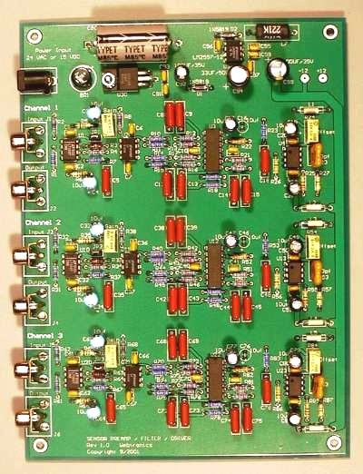
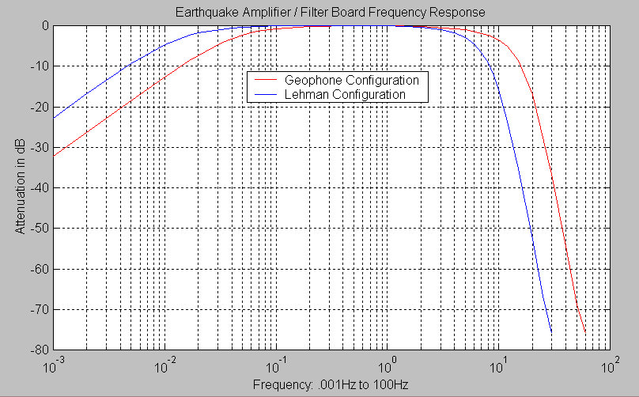

Note: This board is no longer in production
Here is the schematic and artwork
in Gerber format to build your own board. This files are also available on
GitHub here.

Online Documentation
Number of channels: 1, 2 or 3 Channels
Gain: ~170 to ~6,000 - Set by Trim Pot and Jumper
Frequency Response: 0.02Hz (50 Sec.) to 10Hz for Lehman Type Sensors or
0.05Hz (20 Sec.) to 20Hz for Geophone Sensors (Note 1)
Lowpass Filter Type: 8 Pole Butterworth Filter
Highpass Filter Type: 1 Pole Butterworth Filter
Input Connectors: RCA jacks (Stereo Equipment Type) or
.156 Inch 2-Pin Molex Connector or
Terminal Screw Block
Input Impedance: ~10K (Note 2)
Output: +- 10 volts into a 600 ohm load
Power Requirements: 16 to 28 VDC or 12 to 18 VAC ~150MA Power Supply
Power Connector: 2.1mm X 5.5mm Male Jack on the Board
Board Dimensions: 7.750 x 5.750 Inches or 19.655 x 14.605 Centimeters
Each channel has a very low noise front end op-amp, a 10Hz or 20 Hz (Note 1) 8 pole lowpass filter, 50 or 20 second 1 pole highpass filter, and an output op-amp that can drive up to 100 feet of coax cable and a 600 ohm load.
The plot below shows the frequency response of the PSN-ADC-EQAMP with the standard Lehman and Geophone lowpass and highpass filter configurations.

The power connector on the board is a standard 2.1mm X 5.5mm male jack. The board can be powered with either AC or DC voltages. The DC input range is 16 volts to 30 volts and the AC range is 11 to 18 VAC. The amount of current needed to supply the board depends on the input voltage and number of channels:
Volts DC Current Power in Watts
Single Channel: 16 64ma 1.02
20 54ma 1.08
24 48ma 1.15
28 44ma 1.23
Two Channels: 16 106ma 1.70
20 92ma 1.84
24 82ma 1.97
28 76ma 2.13
Three Channels: 16 144ma 2.30
20 126ma 2.52
24 114ma 2.74
28 106ma 2.97
The input and output connector for each channel can be one of the following. Please specify when ordering.
- RCA Jack
- .156 Inch 2-Pin Molex connector with mating connector block and pins
- Terminal Block Screws
If the board is placed in the option plastic box you will need to use either the .156 Molex or terminal block screw input connector option. There is not enough room in the box to use the RCA jack and mating plug.
{kind=link}
{kind=link}
{kind=link}